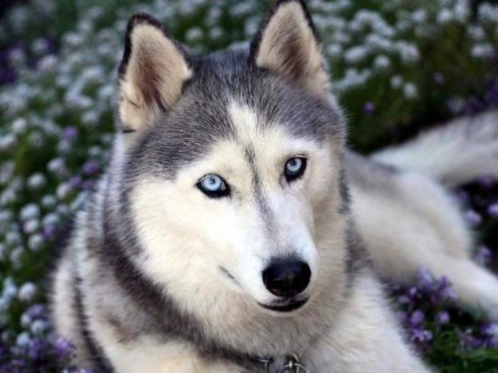

Los husky son perros fieles y grandes
Los husky pesan aproximadamente 20 a 27 kilos en machis y 16 a 23 kilos en hembras
Estos perros son muy bonitos pero requieren de cuidados especiales son muy extrovertidos y amigables oueden vivir de 12 a 15 años de vidas es originario de Siberia